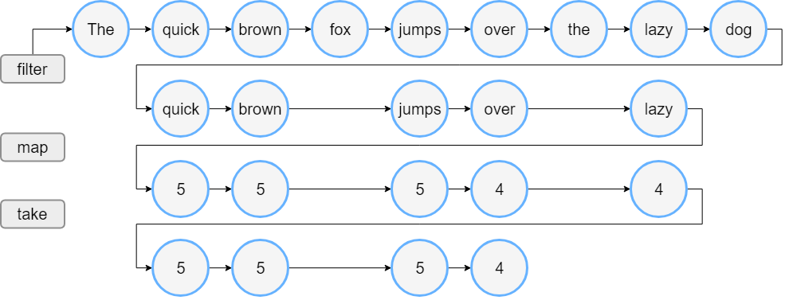
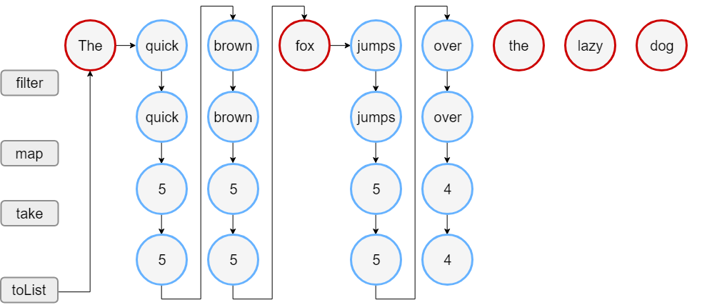

序列
除了集合之外，Kotlin 标准库还包含另一种容器类型： 序列 Sequence<T>
序列提供与 Iterable 相同的函数，但实现另一种方法来进行多步骤集合处理：
- 当 Iterable 的处理包含多个步骤时，它们会优先执行：每个处理步骤完成并返回其结果 中间集合 。在此集合上执行后面的步骤
- 序列的多步处理在可能的情况下会 延迟 执行：仅当请求整个处理链的结果时才进行实际计算
操作执行的顺序也不同：
- Sequence 对 每个元素 逐个执行 所有 处理步骤
- Iterable 完成 整个集合 的 每个 步骤 ，然后进行下一步
因此，序列可避免生成中间步骤的结果，从而提高了整个集合处理链的性能 但是，序列的延迟性质增加了一些开销，这些开销在处理较小的集合或进行更简单的计算时可能很重要 因此，应该同时考虑使用 Sequence 与 Iterable，并确定在哪种情况更适合
构造
元素
要创建一个序列，请调用 sequenceOf() 函数，列出元素作为其参数：
val numbersSequence = sequenceOf("four", "three", "two", "one")
Iterable
如果已经有一个 Iterable 对象（例如 List 或 Set），则可以通过调用 asSequence() 从而创建一个序列：
val numbers = listOf("one", "two", "three", "four") val numbersSequence = numbers.asSequence()
函数
创建序列的另一种方法是通过使用计算其元素的函数来构建序列。 要基于函数构建序列，请以该函数作为参数调用 generateSequence() ：
- 可以将 第一个元素 指定为 显式值 或 函数调用的结果
- 当提供的函数 返回 null 时，序列生成 停止
fun main() { //sampleStart val oddNumbers = generateSequence(1) { it + 2 } // `it` 是上一个元素 println(oddNumbers.take(5).toList()) //println(oddNumbers.count()) // 错误：此序列是无限的。 //sampleEnd }
注意：示例中的序列是无限的
要使用 generateSequence() 创建有限序列，请提供一个函数，该函数在需要的最后一个元素之后返回 null：
fun main() { //sampleStart val oddNumbersLessThan10 = generateSequence(1) { if (it < 10) it + 2 else null } println(oddNumbersLessThan10.count()) //sampleEnd }
组块
有一个函数可以逐个或按任意大小的组块生成序列元素 sequence() 函数。 此函数采用一个 lambda 表达式 ，其中包含 yield() 与 yieldAll() 函数的调用：
- 将一个元素返回给序列使用者，并暂停 sequence() 的执行，直到使用者请求下一个元素
- yield() 使用单个元素作为参数
- yieldAll() 中可以采用 Iterable 对象、Iterable 或其他 Sequence
- yieldAll() 的 Sequence 参数可以是无限的
- 当然，这样的调用必须是最后一个，也就是说之后的所有调用都永远不会执行
fun main() { //sampleStart val oddNumbers = sequence { yield(1) yieldAll(listOf(3, 5)) yieldAll(generateSequence(7) { it + 2 }) } println(oddNumbers.take(5).toList()) //sampleEnd }
操作
关于序列操作，根据其状态要求可以分为以下几类：
无状态： 操作不需要状态，并且可以独立处理每个元素
例如 map() 或 filter()无状态操作还可能需要少量常数个状态来处理元素
例如 take() 与 drop()
- 有状态： 操作需要大量状态，通常与序列中 元素的数量 成比例
如果序列操作返回延迟生成的另一个序列，则称为 中间序列 ，否则，该操作为 末端 操作
末端操作的示例为 toList() 或 sum()
只能通过末端操作才能检索序列元素
序列可以多次迭代；但是，某些序列实现可能会约束自己仅迭代一次。其文档中特别提到了这一点
示例
通过一个示例来看 Iterable 与 Sequence 之间的区别
Iterable
假定有一个单词列表。下面的代码过滤长于三个字符的单词，并打印前四个单词的长度：
fun main() { //sampleStart val words = "The quick brown fox jumps over the lazy dog".split(" ") val lengthsList = words.filter { println("filter: $it"); it.length > 3 } .map { println("length: ${it.length}"); it.length } .take(4) println("Lengths of first 4 words longer than 3 chars:") println(lengthsList) //sampleEnd }
运行此代码时，会看到 filter() 与 map() 函数的执行顺序与代码中出现的顺序相同：
- 对于所有元素filter
- 对于在过滤之后剩余的元素进行length转换
- 最后两行的输出
列表处理如下图：

Sequence
现在用序列写相同的逻辑：
fun main() { //sampleStart val words = "The quick brown fox jumps over the lazy dog".split(" ") // 将列表转换为序列 val wordsSequence = words.asSequence() val lengthsSequence = wordsSequence.filter { println("filter: $it"); it.length > 3 } .map { println("length: ${it.length}"); it.length } .take(4) println("Lengths of first 4 words longer than 3 chars") // 末端操作：以列表形式获取结果。 println(lengthsSequence.toList()) //sampleEnd }
此代码的输出表明：
仅在构建结果列表时才调用 filter() 与 map() 函数
因此，首先看到文本 “Lengths of..” 的行，然后开始进行序列处理
- 对于过滤后剩余的元素，映射在过滤下一个元素之前执行
- 当结果大小达到 4 时，处理将停止，因为它是 take(4) 可以返回的最大大小
序列处理如下图：

在此示例中，序列处理需要 18 个步骤，而列表需要 23 个步骤来执行操作
| Next：操作 | Previous：区间 | Home：集合 |